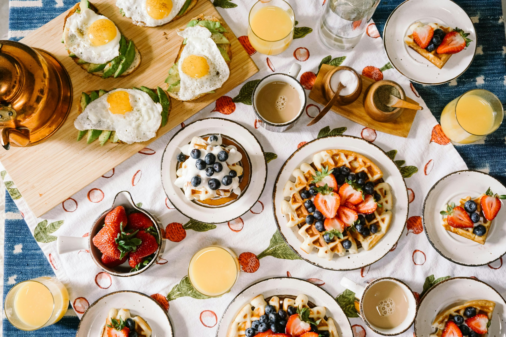

35 min
Medium
This project features a curated selection of 20 professional recipes. From Mediterranean classics to Asian fusion, each dish includes detailed ingredients, step-by-step instructions, and nutritional facts.
